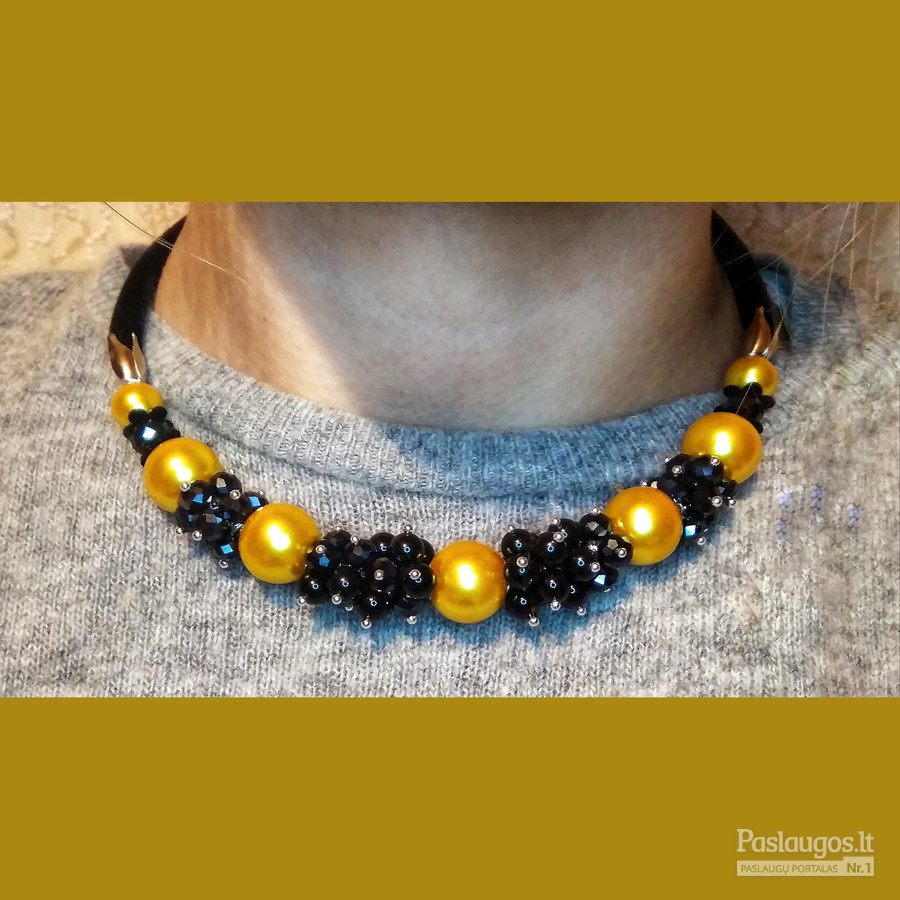

Pristatymas Grąžinimas Kontaktai Translate » Mes naudojame slapukus, siekiant užtikrinti geriausią patirtį mūsų svetainėje. Jei toliau naudosite šią svetainę, manysime, kad sutinkate. Sutinku Atsisakyti komercinių slapukų Plačiau Atsisakyti slapukų
Mauris vitae nisl nec metus placerat perdiet est. Phasellus dapibus semper urna. Pellentesque ornare, orci in consectetuer hendrerit, volutpat.
Pellenteque ornare

Perlų rūšys | perlai.eu Juodojo natūralaus gintaro karoliai, suverti iš švelniai apdirbto Baltijos gintaro gabalėlių. Manoma, kad gintaras saugo, gydo ir ramina sielą, todėl nešiojantį šį papuošalą lydės gera savijauta ir ramybė. Dėl subtilios juodojo gintaro karolių spalvos aplinkiniams kuždėsite apie savo išpuoselėtą skonį ir stiliaus jauseną.
Karoliai - Amber World Rankų darbo papuošalai iš odinių žiedlapių. UAB "Karoliai" V. Nagevičiaus g. 5, 97131 Kretinga. Telefonas: +370 670 81207 El. paštas: info@karoliai.com
KAROLIUKAI Perlų spalvos Balta – ši spalva klasikinė, vis dar yra viena populiariausių perlų spalvų pasaulyje.Balti perlai laikomi tyrumo simboliu, dažnai dėvimi vestuvių, išleistuvių bei kitomis progomis. Natūrali perlų spalva – rožinė, su įvairiais jos atspalviais – levandų, švelniai rožine, persikine.Šios spalvos labai gražiai dera tarpusavyje sukurdamos papuošalo ...